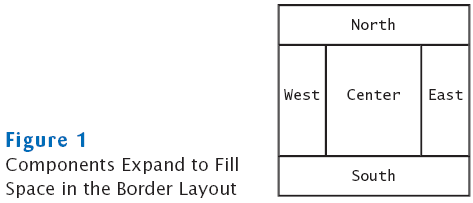

previous
|
start
|
next
Border Layout
Border layout groups container into five areas:
center, north, west, south and east

Default layout manager for a frame (technically, the frame's content pane)
When adding a component, specify the position like this:
panel.add(component, BorderLayout.NORTH);
Expands each component to fill the entire allotted area
If that is not desirable, place each component inside a panel
previous
|
start
|
next